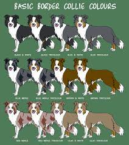
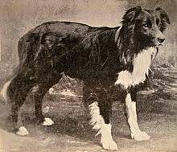

pagina 3

Las características del border collie son ligeramente parecidas a las del pastor ovejero australiano. Por ese motivo, muchos amantes de ambas razas de perros desean más información acerca de las diferencias entre un border collie y un pastor australiano. La raza border collie destaca por ser tremendamente ágil, con una forma física idónea para hacer ejercicio, saltar y correr. Los machos suelen medir unos 53 centímetros hasta la cruz y las hembras algo menos, como suele ser habitual en muchas razas de perros. Así mismo, pueden llegar a pesar hasta 20 kilogramos y muestran un cuerpo alargado y un aspecto muy dinámico.
Aunque la imagen que nos viene a la mente cuando pensamos en el border collie tiende a ser la de un perro con un denso y bonito manto, lo cierto es que existen dos variedades distintas en cuanto al tipo de pelo: el perro border collie de pelo largo y el border collie de pelo corto. En ambos casos el perro presenta una doble capa de pelo densa que lo protege del frío y el viento, una interna suave y otra externa más áspera. De esta forma, la única diferencia entre ellos reside en la longitud del pelaje, puesto que para ambos se acepta una amplia gama de colores, como por ejemplo: Border collie negro y blanco. Border collie marrón y blanco. Border collie negro, marrón y blanco. Border collie blanco y fuego.
La raza del Border Collie, como lo conocemos hoy, tuvo su origen en Northumberland, un lugar en la frontera entre Inglaterra y Escocia; de ahí su nombre Border (Frontera) Colie (Útil). La raza fue producto de la necesidad de un perro que fuera robusto, ágil y adiestrable, con una destreza innata, para trabajar largar horas con al rebaño por terrenos accidentados, montañosos y rocosos. Y durante un tiempo éstos perros como raza aun no estaban definidas claramente, eran simplemente ‘Collies’, perros pastores. Fue en la década de 1860 cuando la popularidad de estos perros aumentó.